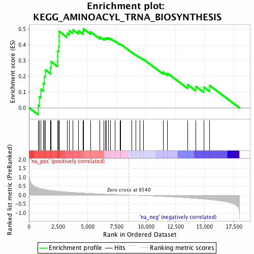
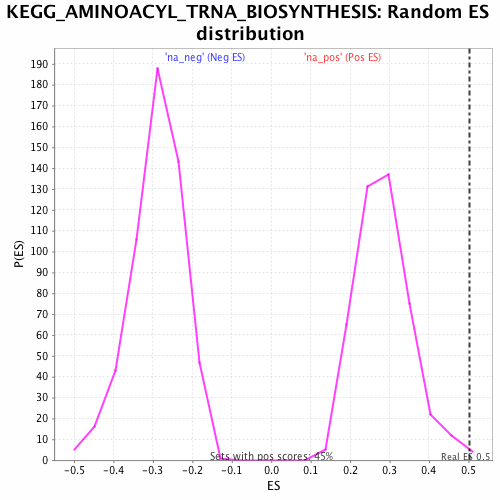

| | | Dataset | GSEA_Cushing_prerank_FC |
| Phenotype | NoPhenotypeAvailable |
| Upregulated in class | na_pos |
| GeneSet | KEGG_AMINOACYL_TRNA_BIOSYNTHESIS |
| Enrichment Score (ES) | 0.5026228 |
| Normalized Enrichment Score (NES) | 1.7671274 |
| Nominal p-value | 0.0044345898 |
| FDR q-value | 0.011345188 |
| FWER p-Value | 0.154 |
Table: GSEA Results Summary

Fig 1: Enrichment plot: KEGG_AMINOACYL_TRNA_BIOSYNTHESIS
Profile of the Running ES Score & Positions of GeneSet Members on the Rank Ordered List
| PROBE | GENE SYMBOL | GENE_TITLE | RANK IN GENE LIST | RANK METRIC SCORE | RUNNING ES | CORE ENRICHMENT | | 1 | YARS | | | 809 | 0.408 | 0.0160 | Yes |
| 2 | CARS | | | 881 | 0.392 | 0.0707 | Yes |
| 3 | IARS | | | 1006 | 0.366 | 0.1187 | Yes |
| 4 | GARS | | | 1218 | 0.333 | 0.1568 | Yes |
| 5 | EARS2 | | | 1308 | 0.321 | 0.1999 | Yes |
| 6 | EPRS | | | 1386 | 0.313 | 0.2424 | Yes |
| 7 | NARS | | | 1852 | 0.265 | 0.2562 | Yes |
| 8 | SARS2 | | | 1876 | 0.264 | 0.2944 | Yes |
| 9 | YARS2 | | | 2448 | 0.225 | 0.2962 | Yes |
| 10 | FARSB | | | 2456 | 0.224 | 0.3294 | Yes |
| 11 | DARS2 | | | 2462 | 0.224 | 0.3626 | Yes |
| 12 | FARS2 | | | 2525 | 0.220 | 0.3920 | Yes |
| 13 | TARS | | | 2562 | 0.217 | 0.4225 | Yes |
| 14 | IARS2 | | | 2565 | 0.217 | 0.4549 | Yes |
| 15 | AARS | | | 2574 | 0.216 | 0.4868 | Yes |
| 16 | RARS | | | 3250 | 0.178 | 0.4759 | Yes |
| 17 | LARS | | | 3436 | 0.169 | 0.4910 | Yes |
| 18 | PSTK | | | 3729 | 0.156 | 0.4980 | Yes |
| 19 | SARS | | | 4211 | 0.136 | 0.4916 | Yes |
| 20 | NARS2 | | | 4609 | 0.121 | 0.4875 | Yes |
| 21 | RARS2 | | | 4659 | 0.119 | 0.5026 | Yes |
| 22 | DARS | | | 5265 | 0.098 | 0.4835 | No |
| 23 | QARS | | | 6046 | 0.073 | 0.4509 | No |
| 24 | PARS2 | | | 6395 | 0.064 | 0.4412 | No |
| 25 | SEPSECS | | | 6542 | 0.059 | 0.4419 | No |
| 26 | TARS2 | | | 6613 | 0.057 | 0.4465 | No |
| 27 | VARS | | | 6795 | 0.051 | 0.4441 | No |
| 28 | CARS2 | | | 6963 | 0.045 | 0.4415 | No |
| 29 | MARS | | | 7365 | 0.035 | 0.4245 | No |
| 30 | KARS | | | 7791 | 0.022 | 0.4041 | No |
| 31 | HARS | | | 7820 | 0.021 | 0.4058 | No |
| 32 | TARSL2 | | | 8762 | -0.007 | 0.3544 | No |
| 33 | LARS2 | | | 9126 | -0.019 | 0.3369 | No |
| 34 | VARS2 | | | 9472 | -0.026 | 0.3216 | No |
| 35 | MTFMT | | | 9767 | -0.029 | 0.3096 | No |
| 36 | HARS2 | | | 11456 | -0.078 | 0.2271 | No |
| 37 | FARSA | | | 11831 | -0.090 | 0.2197 | No |
| 38 | WARS2 | | | 13551 | -0.156 | 0.1472 | No |
| 39 | WARS | | | 14267 | -0.188 | 0.1356 | No |
| 40 | MARS2 | | | 14931 | -0.223 | 0.1319 | No |
| 41 | AARS2 | | | 15418 | -0.252 | 0.1426 | No |
Table: GSEA details [plain text format]

Fig 2: KEGG_AMINOACYL_TRNA_BIOSYNTHESIS: Random ES distribution
Gene set null distribution of ES for KEGG_AMINOACYL_TRNA_BIOSYNTHESIS